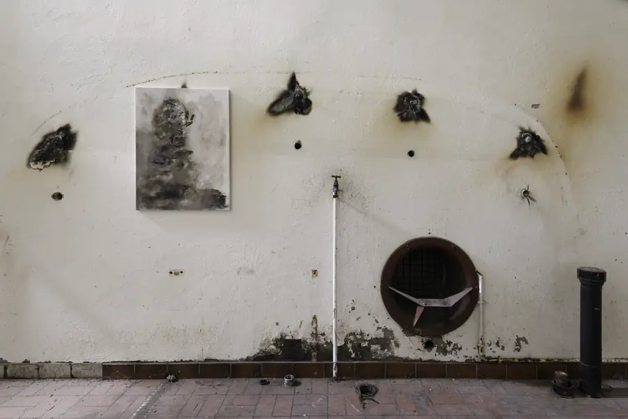
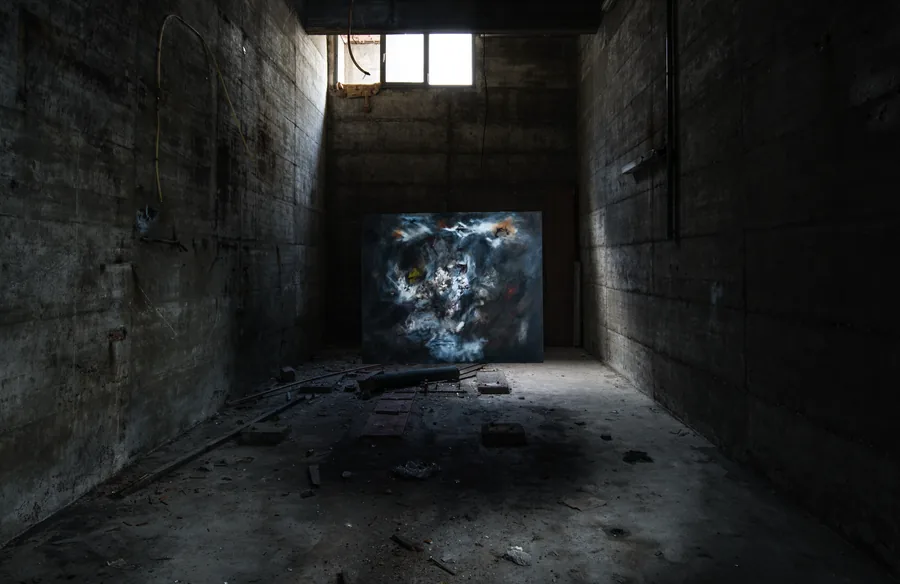
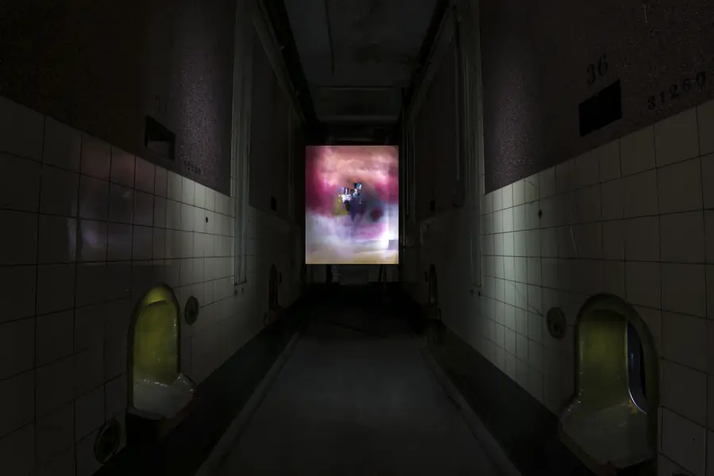

03 / 06
Anciennes caves Provins · St-Léonard
Les murs
se souviennent.
Photographies : David Zuber

Une exploration
St-Léonard
Avec le photographe David Zuber, nous avons emmené mes peintures dans les anciennes caves Provins, à St-Léonard.
Les toiles ont rencontré les murs, la poussière, la lumière du lieu. Un autre espace pour les regarder.
Revenir à la matière des toiles


Le lieu a disparu.
Les images restent.
Le bâtiment a depuis été détruit. Ces photographies gardent la trace de cette rencontre.
À l’origine de cette aventure
À Alban Reynard.
Hommage à Alban Reynard, qui a inspiré ce projet fou.
PhotographiesDavid Zuber